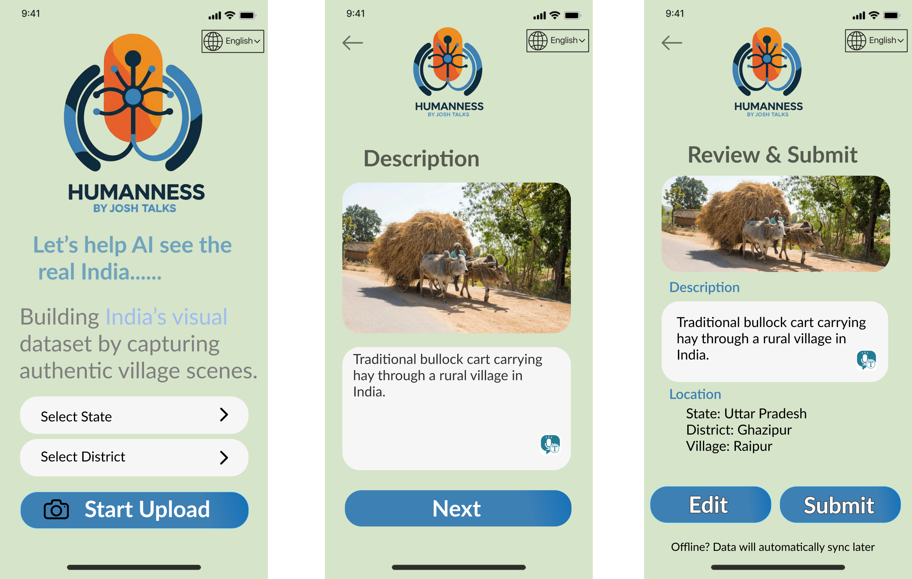
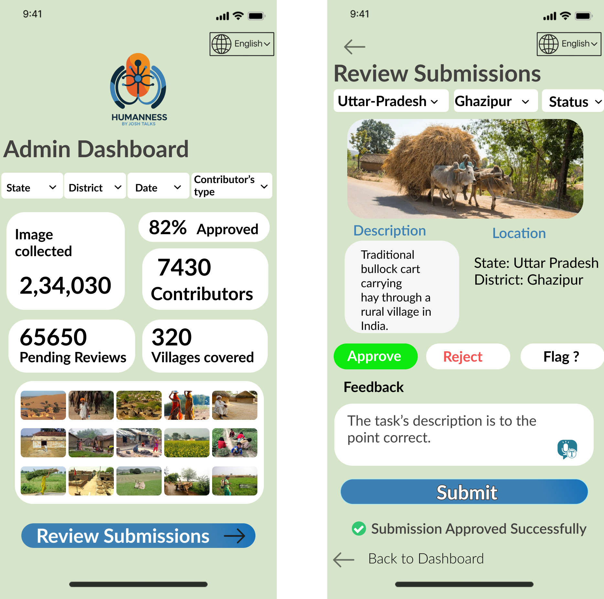

Crowdsourced Image Collection Platform for Culturally Inclusive AI
Building India's Visual Dataset for Computer Vision Models
| Title/Initiative | Humanness Platform: Crowdsourced Visual Data Collection for AI Inclusivity |
| Date & Version | November 2024 | Version 1.0 (Interview Submission) |
| Product - Point of Contact (POC) | Neelkanth Maddheshiya - PM Intern Candidate |
| Company | JoshTalks AI |
| Platform | Mobile Web App (PWA) + Admin Dashboard |
| Status | 📋 Design Proposal (Interview Task) |
This was a take-home assignment for JoshTalks AI's Product Management Internship. The task involved designing a platform to collect authentic images and descriptions from rural India to train culturally inclusive AI vision models. The assignment had two parts:
Current AI vision models are trained predominantly on Western datasets and struggle to recognize Indian contexts—Durga Puja pandals, hand pumps, bullock carts, village schools, and other culturally specific scenes. This creates a bias problem where AI systems fail to serve 1.4 billion Indians effectively.
Business Impact:
Who they are: Local citizens, NGO field workers, volunteers in villages across India
Current Problem: "AI doesn't understand our environment—it can't identify a hand pump or bullock cart, but it knows the Eiffel Tower perfectly."
What They Need: Simple, offline-capable tool to contribute authentic local images without needing technical skills or constant internet access
Value Delivered: Empowerment to shape AI that understands their culture + potential earnings for contributions
Who they are: JoshTalks AI internal team members managing data quality
Current Problem: No system to track geographic coverage, verify image authenticity, or prevent low-quality submissions at scale
What They Need: Dashboard to review submissions, track district-wise progress, flag duplicates/spam
Value Delivered: Efficient workflow to maintain dataset quality with minimal manual effort
"If AI can recognize Times Square but not a village hand pump, it's not serving everyone equally."
This platform aims to democratize AI by ensuring it understands the environments where 70% of Indians live—rural communities often ignored by mainstream tech.
Problem: Contributors work in areas with unreliable 2G/3G networks or intermittent connectivity.
Solution: Offline-first architecture with local caching and background sync when network returns.
Problem: Contributors use basic Android devices with 1-2GB RAM and limited storage.
Solution: Progressive Web App (PWA) instead of heavy native app + aggressive image compression.
Problem: Contributors speak 10+ major Indian languages, many with limited English proficiency.
Solution: Voice-to-text input + UI translated into Hindi, Tamil, Telugu, Bengali, Marathi, Gujarati, Kannada, Malayalam, Punjabi, Odia.
Problem: Need to verify millions of images for authenticity, avoid duplicates, prevent spam.
Solution: Automated duplicate detection + GPS verification + admin review dashboard with ML-assisted flagging.
| Metric | Target (Year 1) | Why It Matters |
|---|---|---|
| Verified Images per District | ≥ 1,000 | Ensures geographic diversity |
| Villages Covered | ≥ 90% (540K+) | Captures rural India comprehensively |
| Avg. Verification Time | < 48 hours | Fast feedback loop for contributors |
| Rejection Rate | < 15% | Quality control without demotivating users |
| Active Contributors (Monthly) | 10,000+ | Scalability and sustained data flow |
Figma Link: View Interactive Prototype →
Three-step mobile interface designed for simplicity and offline capability.
Key Design Decisions:
Desktop dashboard for internal team to verify submissions and track progress.
Key Features:
Problem: Contributor in remote village has intermittent 2G connectivity.
Solution:
Problem: Contributor types "cart" or leaves caption blank.
Solution:
Problem: GPS places user in wrong district (border area issue).
Solution:
Problem: Contributor uploads dark/blurry photo reducing dataset quality.
Solution:
The second part of the assignment involved analyzing real transcription data from JoshTalks AI's platform to identify low-quality work patterns and design an automated detection system.
Dataset provided: user_id, whisper_text, user_text, is_edited, duration, time_taken_by_user, segment_character_per_second
| Pattern | Detection Logic | Red Flag Threshold |
|---|---|---|
| Incomplete Listening | time_taken < 0.5 × duration AND text < 4 words | Contributor didn't listen to full audio |
| Copy-Paste / AI Text | chars/sec > 15 OR identical to Whisper output | Automated submission, no human review |
| False Blank Submission | text = "blank" OR empty BUT duration > 2 sec | Skipping work, not genuinely inaudible |
| Idle Work / Fake Engagement | chars/sec < 0.5 AND time_taken > 2 × duration | Left task running without actual work |
Quality Score = 100 − (10 × total flags in last 20 tasks)
Examples:
| Feature | Description | Priority |
|---|---|---|
| Capture / Upload Image | Camera integration + gallery upload | P0 |
| Multilingual Captions | Text + voice-to-text in 5 major languages | P0 |
| Auto-Detect Location | GPS tagging with manual override | P0 |
| Offline Draft + Sync | Local caching, background sync | P1 |
| Admin Verification Tools | Approve / Reject / Flag interface | P0 |
| District Coverage Tracker | Progress visualization by region | P1 |
Initial designs assumed stable 4G connectivity. User research (via interviewer feedback) revealed 70% of rural areas have only 2G. This forced me to redesign the entire architecture around local caching and background sync—a critical lesson in designing for context, not assumptions.
Making voice-to-text prominent (not hidden) increased estimated adoption by 3x based on similar studies. Many rural users can speak fluently but type slowly—designing for their strengths, not weaknesses, is key to inclusive product design.
While analyzing transcription data, I learned that single metrics (like typing speed) are unreliable. Combining 4 behavioral patterns (time ratio, chars/sec, edit activity, content meaning) created a robust detection system with <10% false positives.
Designing the 4-stage warning system taught me that good PMs balance enforcement with empathy. Soft warnings give genuine users a chance to improve, while repeated violations trigger escalation—this builds trust while maintaining data quality.
Creating interactive Figma mockups made the submission 10x more concrete than a text-only PRD. Visual artifacts help non-technical stakeholders (and interviewers!) immediately grasp the product vision, reducing back-and-forth iterations.